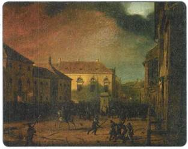
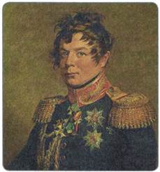
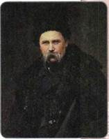
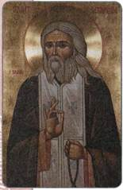
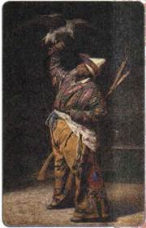

Материал для самостоятельной работы и проектной деятельности учащихся
Каково было положение разных народов и конфессий в Российской империи в период правления Николая I?
1. Положение в Царстве Польском
Революция во Франции в 1830 г., развитие национально-освободительных движений в Европе не могли не сказаться на общественных настроениях в России. Успехи этих оппозиционных движений подогревали подобные настроения в наиболее проблемных «национальных окраинах» страны. Одним из таких неспокойных районов было Царство Польское. Несмотря на то что польским землям был предоставлен особый статус и широкие возможности самоуправления, представители высшего польского дворянства по-прежнему мечтали возродить утраченное независимое государство. Дарование Царству Польскому конституции в 1815 г., очень либеральной для своего времени, не удовлетворило польскую оппозицию.
Кроме того, Николай I предпринял ряд мер по усилению контроля за Царством Польским, что было в русле общей политики его правления. Так, была создана тайная полиция, усилился контроль за печатью, производились аресты и ссылки оппозиционных депутатов сейма. Также была сужена сфера деятельности сейма. Наместник Царства Польского великий князь Константин Николаевич стал всё чаще действовать в обход сейма, не советуясь с польским дворянством.
В июле 1830 г., после того как во Франции вспыхнула революция, Николай, в соответствии с решениями Священного союза, был готов послать войска для помощи французской монархии. Однако поляки встретили это решение в штыки, не желая пополнять «армию карателей». Угроза мобилизации стала поводом к восстанию в Царстве Польском в 1830—1831 гг.
29 ноября 1830 г. группа военных ворвалась во дворец наместника великого князя Константина в Варшаве и попыталась его убить. Был захвачен арсенал, и началась раздача оружия восставшим. В январе 1831 г., в нарушение действующей конституции 1815 г., польский сейм провозгласил, что Николай I и его семья лишаются прав на польский престол. Восставшие создали свой орган власти — правительство во главе с бывшим членом Негласного комитета А. А. Чарторыйским. Это означало не только отказ самих поляков от конституционного порядка 1815 г., но и фактическое объявление войны России. В короткий срок восставшие сформировали армию.
В ответ Николай I направил на усмирение мятежа армию общей численностью 120 тыс. человек под командованием генерал-фельдмаршала И. И. Дибича. Вскоре он разгромил войска повстанцев в битве под Гроховом. Однако внезапная смерть Дибича от холеры помешала закрепить успех. Новым командующим был назначен генерал-фельдмаршал И. Ф. Паскевич. 8 сентября 1831 г. войска под его командованием заняли столицу Царства Польского Варшаву. Восстание потерпело поражение.
14 февраля 1832 г. император отменил конституцию 1815 г. как недействующую и заменил её так называемым «Органическим статутом». Этот документ провозглашал Царство Польское составной частью Российской империи. Польский сейм и армия были ликвидированы. Однако сохранялась административная автономия, должность наместника Царства Польского, а также совет при наместнике и Государственный совет.
После подавления восстания были закрыты Варшавский и Виленский университеты, лицей в Кременце. Для предотвращения новых выступлений Николай I распорядился построить около Варшавы цитадель (крепость), орудия которой держали бы под постоянным прицелом польскую столицу.

Захват арсенала в Варшаве. 1830 г. Художник М. Залеский

И. И. Дибич
2. Политика по отношению к Финляндии
Введение широкой автономии Великого княжества Финляндского в составе Российской империи было ознаменовано ещё Александром I, который в 1809 г. лично открыл сейм в городе Борго. Было объявлено о сохранении старой конституции и важнейших законов. С 1812 г. столицей Великого княжества Финляндского стал город Гельсингфорс (современный Хельсинки).
В правление Николая I сейм практически не созывался, однако Финляндия продолжала оставаться автономной. В 1826 г. Николай I учредил должность министра-статс-секретаря Великого княжества Финляндского, который имел право личного доклада императору (и являлся практически представителем Финляндии в столице России). На эту должность назначались в основном уроженцы Финляндии.
3. Положение в Западном крае
Из земель, вошедших в состав Российской империи в конце XVIII в. по результатам разделов Речи Посполитой, был образован Западный край — особая административная единица.
Входившие в состав края 6 белорусских и литовских губерний (Виленская, Ковенская, Гродненская, Минская, Могилёвская и Витебская) назывались Северо-Западным краем, а 3 украинские губернии (Волынская, Подольская, Киевская) — Юго-Западным краем. Эти территории являлись пограничными и потому имели особое управление. Как уже упоминалось ранее, для них издавались особые законы (например, законы по крестьянскому вопросу и др.).
В 1832 г. на украинских губерниях края было образовано Киевское генерал-губернаторство. В 1850 г. из территорий трёх губерний Северо-Западного края (Виленской, Ковенской, Гродненской) было создано Северо-Западное генерал-губернаторство.
На протяжении первой половины XIX в. территории края развивались в экономическом и культурном отношении. Ещё в начале века были открыты залежи каменного угля и железной руды, что имело определяющее значение для развития железоделательной и металлообрабатывающей промышленности в районе будущего Донбасса и Криворожья. Если в 1825 г. в украинских губерниях насчитывалось 649 промышленных предприятий, то в 1850 г. их было уже 1655. Стремительно росли обороты портов Малороссии — Одессы, Херсона, Николаева, Очакова.
На украинских землях были открыты университеты: в 1804 г. — Харьковский, в 1834 г. — Киевский (университет Святого Владимира).
С 1846 по 1847 г. в Киевском университете действовало Кирилло-Мефодиевское студенческое общество — тайная политическая организация, участники которой выступали за национальную автономию всех славянских народов в рамках единой славянской федерации, ликвидацию самодержавия, крепостного права. Они отстаивали идеи республиканского строя. Во главе организации стоял профессор истории Н. И. Костомаров. Одним из активных участников Кирилло-Мефодиевского общества был поэт Т. Г. Шевченко, открыто призывавший к изменению существующих порядков, развитию обучения и изданию книг на украинском языке. В 1847 г. правительство разгромило организацию. Шевченко был отдан в солдаты и направлен в далёкую среднеазиатскую ссылку «с запрещением писать и рисовать».

Т. Г. Шевченко. Художник И. Крамской
Прибалтийские народы проживали на территориях Эстляндской, Курляндской и Лифляндской губерний Российской империи. Прибалтийские помещики состояли на воинской службе в русской армии.
За сохранение национальных традиций здесь вели борьбу Курляндское общество для изучения литературы и искусства, Латышское литературное общество, Эстонское учёное общество.
Как говорилось ранее, при императоре Александре I Прибалтика пережила аграрную реформу, которая освободила крестьян от крепостной зависимости, но не дала им земли.
Начавшийся промышленный переворот и активизация внешней торговли со временем способствовали формированию в Прибалтике одного из самых динамично развивающихся экономических районов Российской империи. Его наиболее крупными центрами стали города Рига, Ревель, Вильно.
4. Положение евреев в Российской империи
При Николае I было издано Положение 1835 г., в котором регулировались вопросы быта и управления еврейского населения. Как и прежде, евреи имели многие льготы, их положение в сравнении с бесправными крепостными крестьянами России было лучше.
Евреи были освобождены от рекрутской повинности, вместо неё община уплачивала денежный налог. Однако в 1827 г. денежный налог был отменён, введён рекрутский набор. При этом от рекрутства полностью освобождались еврейские купцы всех гильдий, жители сельскохозяйственных колоний, цеховые мастера, механики на фабриках, раввины и все евреи, имевшие среднее или высшее образование. Заменить рекрута (взрослого мужчину) тоже было можно. Но теперь не деньгами, как ранее, а отдавая в рекруты мальчика — в специально создаваемые солдатские «школы кантонистов» (окончившие школу должны были затем отслужить в армии 25 лет). Это был не обязательный призыв. Еврейские общины активно пользовались этим правом, чтобы отдавать в армию сирот, детей вдов, бедняков в счёт семьи богачей.
Привлечение евреев в армию неизбежно вело к крещению евреев, присвоению им русских фамилий и имён, но зато давало право проживать за чертой оседлости. Так правительство проводило политику ассимиляции евреев — постепенного приобщения их к русскому языку и культуре.
Николай I продолжил попытки Александра I переселить часть еврейского населения в Сибирь для приобщения его к земледелию и освоения сибирских земель. Этими задачами занимался специальный комитет по «коренному преобразованию евреев в России». Льготы, предоставляемые евреям-земледельцам, были увеличены.
Еврейские религиозные общины стремились сохранить свою обособленность, тщательно соблюдая свои бытовые, культурные и религиозные традиции. Поскольку занятие сельским хозяйством считалось занятием, недостойным иудея, инициативы правительства не имели благотворного результата.
5. Власть и религиозные конфессии в первой половине XIX в.

Серафим Саровский
По законам Российской империи населению было разрешено исповедовать любую религию, с той лишь оговоркой, что её последователи признают царскую власть и существующие порядки. Положение Русской православной церкви было, однако, привилегированным, так как к её пастве в первой половине XIX в. относилось до 86 % населения страны. Поощрялся переход в православие представителей других вер. С этой целью велась большая миссионерская работа среди народов Поволжья, Кавказа, Сибири.
Для православной России XIX в. было характерным почитание старцев — религиозных наставников, снискавших особый авторитет среди верующих своими проповедями и праведным образом жизни. Самой яркой фигурой среди них в первой половине XIX в. был монах Саровской пустыни Серафим, к которому за советом и наставлением шли тысячи людей со всей страны. Он предсказал многое из того, что случилось в России в последующие десятилетия.
Продолжалась борьба церковных иерархов и государственных органов со старообрядцами. В первой половине XIX в. движение старообрядцев переживало внутренний раскол. В этот период в нём выделились два направления — «поповцев» (близких по взглядам к официальной церкви, признающих священников и церковную иерархию) и «беспоповцев» (отвергающих не только священников, но и ряд церковных обрядов).
Старообрядцы не имели собственной церковной иерархии. Николай I запретил старообрядцам принимать беглых священников, подверг разгрому старообрядческие монастыри в Поволжье. Однако в 1846 г. старообрядцы получили собственного митрополита. Это произошло после того, как в старообрядчество перешёл боснийско-сараевский митрополит Амвросий. Он стал митрополитом Белокриницким (его назвали так по наименованию Белокриницкого монастыря на Буковине). Последователями белокриницкой иерархии стали сотни тысяч старообрядцев.
Присоединение к России польских земель, ссылка участников польских восстаний в Сибирь, а также приток большого числа немецких колонистов способствовали распространению католической веры во многих регионах страны не только среди поляков, литовцев, но и среди части немцев и белорусов.
На украинских землях население в основном принадлежало к униатской церкви, подразумевавшей соединение православной и католической церкви на основе унии при главенстве католической, но с сохранением многих православных обрядов. Униатская церковь подчинялась особым управлениям в Петербурге, а с 1837 г. её делами стал заведовать Синод.
Во время восстания 1830—1831 гг. в Царстве Польском униатское духовенство и часть униатского населения Белоруссии поддержали повстанцев. Поэтому правительство активизировало политику, направленную на воссоединение униатов с православной церковью. Согласно указу 1839 г. униаты Литвы,
Белоруссии и Правобережной Украины объявлялись воссоединёнными с Русской православной церковью. Этот акт встретил упорное сопротивление униатских священников и их паствы, что выражалось в отказе посещать православные церкви и обращаться за исполнением треб к православным священникам.
Протестантизм в России в эти годы был представлен лютеранством и кальвинизмом. Эту религию исповедовали большинство немцев, финнов, эстонцев и латышей. В 1841 г. в Россию проникло новое вероучение — баптизм, которое первоначально распространилось среди немцев, а затем получило признание также у небольшой части русских, украинцев, белорусов, армян, грузин, молдаван, чувашей.
Мусульмане, жившие в России, в основном придерживались суннизма (большинство верующих татар, башкир, а также народы, населявшие Северный Кавказ) и лишь немногие — шиизма (часть дагестанцев и азербайджанцев).
6. Политика России в Средней Азии
Территорию современного Казахстана с XVIII в. населяли кочевые племена казахов (в то время казахов называли по традиции «киргизы»). Они объединялись в три большие группы племён: Малый (Младший) жуз, Средний жуз, Большой (Старший) жуз. Ими управляли ханы. Основным занятием казахов было кочевое скотоводство, очень слабо были развиты земледелие и торговля.
Первыми в состав России вошли казахи Малого жуза (они кочевали в низовьях рек Урал и Сырдарья). Это произошло ещё в 1731 г., когда хан Абулхаир присягнул на верность российскому престолу. В XIX в. в среднеазиатский регион начала проникать Англия, что не могло не обеспокоить российское правительство. В 1840-е гг. верховную власть России признали казахи Среднего жуза, жившие в степных районах Центрального Казахстана. Постепенно здесь начали основываться русские военные укрепления (крепость Копал и др.), которые позже переросли в города.
Правительство инициировало экспедиции в Среднюю Азию, имевшие как научные цели (исследование нового региона), так и практические (решение дипломатических и разведывательных вопросов). Одной из них в 1839—1840 гг. руководил военный губернатор Оренбургской губернии В. А. Перовский. Отряд, вышедший в 1839 г. из Оренбурга, стремился к установлению дружественных отношений с хивинским ханом, однако из-за погодных условий, заболеваний солдат до Хивы добраться не удалось. Своей цели Перовский смог добиться лишь позже (договор с Хивой был заключён в 1854 г.).
Со степями, населёнными казахами, граничили среднеазиатские государства — Хивинское и Кокандское ханства, Бухарский эмират. Они также стремились подчинить себе казахские земли, в чём их активно поддерживала Англия.
Кочевники Хивы, Бухары и Коканда совершали набеги на земли казахов, перешедшие под власть России. Это вынуждало Россию принимать ответные меры по защите своих пограничных территорий, что впоследствии подтолкнёт к завоеванию Средней Азии.

Богатый киргизский охотник с соколом. Художник В. В. Верещагин
ПОДВЕДЁМ ИТОГИ
Положение представителей разных народов и конфессий в Российской империи было неодинаковым. Финляндия пользовалась значительной автономией. Самостоятельность польских земель была ограничена после восстания 1830—1831 гг. Особое управление имел пограничный Западный край, на территории которого проживали в основном белорусы, литовцы и украинцы.
Вопросы и задания для работы с текстом параграфа
1. В чём состояли причины обострения польского вопроса в 1830 г.? 2. Какие перемены произошли при Николае I в Финляндии и Прибалтике? 3. Что было характерно для экономического развития и общественного движения на Украине? 4. Каковы были основные тенденции политики власти по отношению к еврейскому населению в составе Российской империи?
Думаем, сравниваем, размышляем
1. Как вы думаете, о чём говорит подчинение униатской церкви непосредственно Синоду? 2. Назовите и охарактеризуйте причины, которые способствовали проникновению России в Среднюю Азию. 3. Объясните, почему правительство наделяло особым административным статусом те территории, которые имели приграничное расположение. 4. Составьте в тетради хронологию основных событий Польского восстания 1830—1831 гг. 5. Используя дополнительные материалы, сравните уклад жизни финнов и украинцев в середине XIX в. Сделайте презентацию, иллюстрирующую основные черты сходства и различия. 6. Изучите дополнительные материалы, посвящённые истории Киевского университета (университет Святого Владимира). Определите, какие направления обучения в нём были представлены наиболее полно.